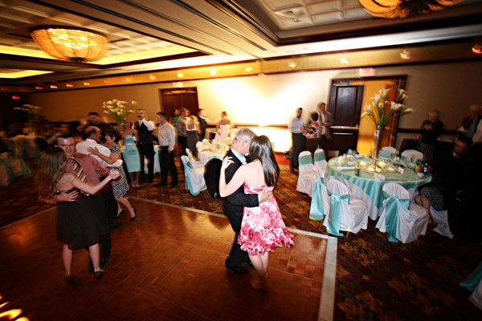

Shall We Dance?
“He who would learn to fly one day must first learn to stand and walk and run and climb and dance; one cannot fly into flying.” – Friedrich Nietzsche

One of the cool things you can to ましょう, that takes almost no effort at all (and you don’t have to learn anything new to do it too) is to add the question marker か to the end of your ましょう.
Can you figure out, without looking, what this does?
Adding a か to ましょう changes it from “let’s” to “shall we.”
At least, that’s the gist of it. Basically, now you’re still saying “let’s” do something, but you’re also asking the other person permission at the same time. In English, it’s like saying “shall we” instead of “let’s.” The difference is pretty much the same as well. Take the following sentences as for example.
a すし を たべましょう。
Let’s eat sushi.
a すし を たべましょうか。
Shall we eat sushi?
a ビール を のみましょう。
Let’s drink beer.
a ビール を のみましょうか。
Shall we drink beer?
The difference in Japanese is so small and so easy to remember, but you get a lot of new opportunities from it. Kind of nice how that works. Plus, it makes sense, too, which should make it easier to remember.
A few more examples. Go through these and make sure you can read / say them all. We’ll revive them on the practice page as well, with other sentences added in.
a いっしょ に ゲーム を かいましょうか。
Shall we buy a game together?
a これ を やめましょうか。
Shall we stop this?
a ともだち を あつめましょうか。
Shall we assemble (our) friends?
a ロボット を つくりましょうか。
Shall we create a robot.
a にほんご を べんきょうしましょうか。
Shall we study Japanese?
Make sure you know the meanings of the above sentences before moving on. Oh, and K… 踊りましょうか？ Yeah, with me, if you don’t mind.